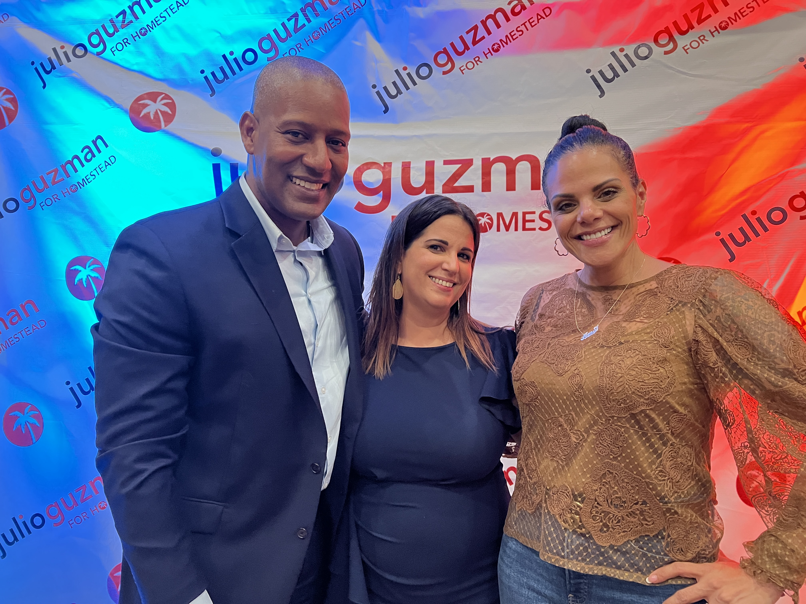

Julio Guzman has spent more than four decades in Homestead. He served as vice mayor and now chairs the Homestead Housing Authority board. As a licensed real estate broker, he also works with local residents and businesses every day.
Julio is a husband and father. He earned an MBA from Florida International University, played football and baseball at Carson-Newman University, and was selected in the MLB draft by the Arizona Diamondbacks.
Julio stays involved through civic organizations, business groups, and local service. Those relationships help him listen to residents and bring people together around practical solutions.
Join the Campaign My PlanThe son of Dominican parents, Julio grew up with a strong connection to Homestead. More than four decades here have shaped how he approaches public service.
Julio played football and baseball at Carson-Newman University.
Julio was selected by the Arizona Diamondbacks in the MLB draft.
Julio earned an MBA from Florida International University.
Julio has worked in real estate for more than two decades, helping residents and businesses navigate the local market.
Julio served on the Homestead City Council and as vice mayor. He understands how the Council sets policy and how much progress depends on working with colleagues, the city manager, and residents.
Julio has served on numerous boards where he collaborates with other leaders to improve the quality of life for residents.
Job Creation and Economic Growth
Supporting local tourism and cultural events
Advocating for more visitors to South Dade
Connecting businesses and commercial opportunities
Advocating for the agritourism industry in Homestead
Joining local service projects and community partnerships
Ready to help build a brighter Homestead?
Get Involved